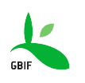
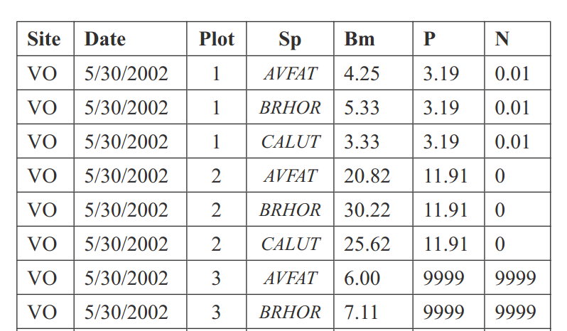

Fostering the next generation of open science with R
These data are hard to get to
Why R?
The old way...

Why R?
A better way
glm(y ~ -1 + a + c + z + a:z, data = mydata, maxit = 30)
This is reproducible, repeatable and can serve as a analytic workflow.
Enable access to scientific data repositories, full-text of articles, and science metrics and also facilitate a culture shift in the scientific community.
More info @ ropensci.org/packages
| |

 Data
Treebase, Fishbase,
Flybase,
GBIF, Vertnet
Dryad, ITIS
NPN, Taxize
opensnp Data
Treebase, Fishbase,
Flybase,
GBIF, Vertnet
Dryad, ITIS
NPN, Taxize
opensnp
|
|
 Journals
PLOS
Springer
textmine
pensoft Journals
PLOS
Springer
textmine
pensoft
|
|
 Hybrid
figshare
Mendeley
DataONE,
rAltmetric, rEML,
rNEXML Hybrid
figshare
Mendeley
DataONE,
rAltmetric, rEML,
rNEXML
|

Search full text of 100k+ open access articles - rplos
library(rplos)
plot_throughtime(list("reproducible science"), 500)

Accessing data behind papers - dryad
dryaddat <- download_url("10255/dryad.1759")
file <- dryad_getfile(dryaddat)
Mapping biodiversity data - rgbif
distribution <- occurrencelist(sciname = "Danaus plexippus", coordinatestatus = TRUE, maxresults = 1000, latlongdf = TRUE)
Species distribution modeling
World Bank climate knowledge portal rWBclimate
library(rWBclimate)
eu_basin <- create_map_df(Eur_basin)
eu_basin_dat <- get_ensemble_temp(Eur_basin, "annualanom", 2080, 2100)

Resolve taxonomic names
library(taxize)
splist <- c("Helanthus annuus", "Pinos contorta", "Collomia grandiflorra", "Abies magnificaa",
"Rosa california", "Datura wrighti", "Mimulus bicolour", "Nicotiana glauca",
"Maddia sativa", "Bartlettia scapposa")
splist_tnrs <- tnrs(query = splist, getpost = "POST", source_ = "iPlant_TNRS")
Taxize queries 11 different name resolution services
Encylopedia of Life
Taxonomic Name Resolution Service
Integrated Taxonomic Information Service
Phylomatic
uBio
Global Names Resolver
Global Names Index
IUCN Red List
Tropicos
Plantminer
Theplantlist dot org
Catalogue of Life
Global Invasive Species Database
Measure research impact in real time
Tracking altmetrics - rAltmetric, ALM
altmetrics("doi/10.1038/489201a")
## Altmetrics on: "Future impact: Predicting scientific success" with altmetric_id: 942310 published in Nature.
## provider count
## 1 Facebook 1
## 2 Feeds 10
## 3 Google+ 1
## 4 Cited 179
## 5 Tweets 159
## 6 Accounts 171
Sharing unpublished data - (figshare)
Using figshare's API it is now possible to share figures, data and any other object generated in R directly to any figshare account.
library(rfigshare)
fs_auth()
# uses api keys to login
id <- fs_create()
fs_upload(id, r_objects)
Moving from invidual data sources to data pipelines
Sharing robust data products
EML (Jones et al., 2001) is a comprehensive standard that
has been adopted by a sector of the larger international ecological research community.
EML provides a common structure for these resources, to better enable ecologists to document,
share, and interpret ecological data
EML standard enables data integration at the machine level (with little or no human intervention).
EML has four general descriptors at the top of the hierarchy. One can choose
to describe a dataset, a protocol, a citation, or software.
Without metadata, a data table such as this one is useless.
A table with limited metadata

Valid EML
<?xml version="1.0"?>
<eml:eml xmlns:eml="eml://ecoinformatics.org/eml-2.1.1" xmlns:ds="eml://ecoinformatics.org/dataset-2.1.1" xmlns:xs="http://www.w3.org/2001/XMLSchema" xmlns:xsi="http://www.w3.org/2001/XMLSchema-instance" xmlns:stmml="http://www.xml-cml.org/schema/stmml-1.1" packageId="reml_3794487.58997023" system="reml">
<dataset>
<title>reml example</title>
<creator>
<individualName>
<givenName>Karthik</givenName>
<surName>Ram</surName>
</individualName>
<electronicMailAddress>karthik.ram@gmail.com</electronicMailAddress>
</creator>
Valid EML
<?xml version="1.0"?>
<eml:eml xmlns:eml="eml://ecoinformatics.org/eml-2.1.1" xmlns:ds="eml://ecoinformatics.org/dataset-2.1.1" xmlns:xs="http://www.w3.org/2001/XMLSchema" xmlns:xsi="http://www.w3.org/2001/XMLSchema-instance" xmlns:stmml="http://www.xml-cml.org/schema/stmml-1.1" packageId="reml_3794487.58997023" system="reml">
<dataset>
<title>reml example</title>
<creator>
<individualName>
<givenName>Karthik</givenName>
<surName>Ram</surName>
</individualName>
<electronicMailAddress>karthik.ram@gmail.com</electronicMailAddress>
</creator>
Units are well defined
<attributeName>ct</attributeName>
<attributeDefinition>count</attributeDefinition>
<measurementScale>
<nominal>
<nonNumericDomain>
<textDomain>
<definition>number</definition>
</textDomain>
</nonNumericDomain>
</nominal>
</measurementScale>
</attribute>
A live demo of rEML
library(rfisheries)
species <- species_codes()
tunas <- grep("Tuna", species$english_name)
who <- c("TUX", "COD", "VET", "NPA")
by_species <- lapply(who, function(x) landings(species = x))
names(by_species) <- who
dat <- melt(by_species, id = c("catch", "year"))
names(dat) <- c("catch", "year", "a3_code")
Full example code
Writing valid EML and uploading to a persistent repo is simple
require(reml)
description <- "Landings data for several species by year, from the OpenFisheries database"
eml_write(dat = dat, meta, title = "Landings Data", description = description,
creator = "Karthik Ram <karthik@ropensci.org>", file = "landings.xml")
eml_publish("landings.xml", description = description, categories = "Ecology",
tags = "fisheries", destination = "figshare", visibility = "public")
Species occurrence data (SPOCC)
Visualize data with Cartodb
A reproducible workflow in R
 Load your own data Load your own data
load all raw untransformed data.
|
→ |
Acquire additional data from the web
e.g. resolve taxonomic names, acquire additional datasets.
|
→ |
Document everything with metadata
The REML package makes it really easy to add valid EML to your data
|
→ |
Submit to a persistent repository
Share your data by submitting to figshare or one at your institution
Generate interactive maps, viewers.
|
rNeXML - extensible and verifiable comparitive data
NeXML - extensible and verifiable comparitive data
Upcoming projects
A robust ecosystem of R tools for ecoinformatics and beyond
Build a native R kernel for the IPython notebook
Build a general purpose interactive mapping library
Integrate with Dat (an open source tool that enables the sharing of large datasets, allowing for a decentralized collaboration flow similar to what git offers for source code.)
-
Upcoming book on open science with R (Chapman and Hall, eta summer 2014)
rOpenSci.org
ropensci
@ropensci
To navigate this presentation, type M to see all slides.
G to go to a specific slide
←
→
/
#